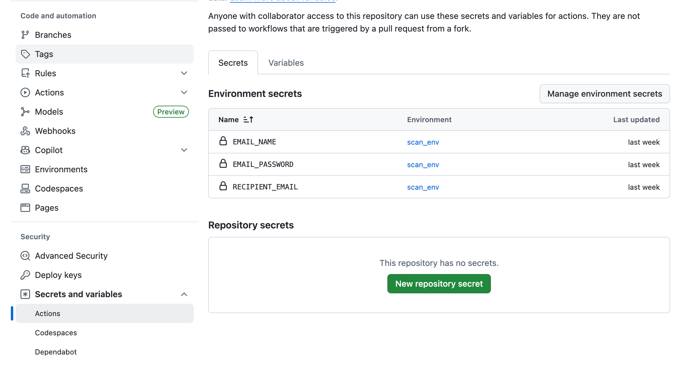
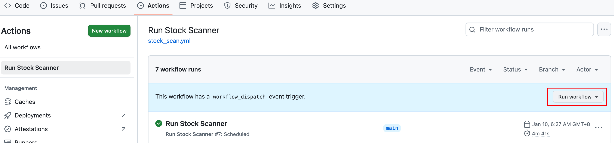

Building an Automated NASDAQ Stock Scanner: From Setup to Deployment
Overview
This guide outlines the complete process for creating an automated stock scanner that runs after market close, scans all NASDAQ-listed stocks, identifies those meeting selected technical criteria, and delivers results via email. The solution is implemented in Python and deployed using GitHub Actions for fully scheduled, unattended operation.
Core Functionality
The scanner provides the following main features:
-
Symbol Acquisition
Retrieves the current list of NASDAQ-listed stock symbols from the official NASDAQ website
-
Scanning Criteria (The following indicators are for example only and can be adjusted according to the actual trading strategy)
- Volume Surge: Current day dollar volume > 2 x the average dollar volume of the previous 60 trading days
- MA Golden Cross: MA5 (day) crosses above MA10, with average dollar volume over the past 10 trading days > US$50 million
-
Result Presentation
Sorts qualifying stocks by current day dollar volume (descending) and displays results clearly in email format
-
Email Notification
Automatically sends scan results to a designated email address
-
Scheduled Automation
Hosts the script on GitHub and uses GitHub Actions for regular, hands-free execution
Technology Stack
- Language: Python
- Data manipulation: pandas, numpy
- HTTP requests: requests
- Market data: yfinance
- Email: smtplib
- CI/CD & hosting: GitHub + GitHub Actions
Implementation Details
Script Structure
-
Email Configuration (sensitive values should be stored in environment variables)
1
2
3
4
5
6
7
8SMTP_SERVER = "smtp.gmail.com"
SMTP_PORT = 587
SENDER_EMAIL = os.getenv('EMAIL_NAME')
SENDER_PASSWORD = os.getenv('EMAIL_PASSWORD')
RECIPIENT_EMAIL = os.getenv('RECIPIENT_EMAIL')
if not all([SENDER_EMAIL, SENDER_PASSWORD, RECIPIENT_EMAIL]):
raise ValueError("Required email environment variables are missing") -
Fetch NASDAQ Symbol List
1
2
3
4
5
6
7
8
9
10
11
12
13
14
15
16
17
18
19
20
21def get_nasdaq_symbols():
"""
Download and parse nasdaqlisted.txt from NASDAQ official website to obtain the current stock symbol list
"""
url = "https://www.nasdaqtrader.com/dynamic/symdir/nasdaqlisted.txt"
try:
response = requests.get(url)
response.raise_for_status()
df = pd.read_csv(io.StringIO(response.text), sep="|")
symbols = df['Symbol'].dropna().tolist()
print(f"Successfully retrieved {len(symbols)} NASDAQ symbols")
return symbols
except requests.exceptions.RequestException as e:
print(f"Failed to download symbol list: {e}")
return []
except pd.errors.EmptyDataError:
print("Downloaded file is empty or has incorrect format")
return []
except Exception as e:
print(f"Error parsing symbol list: {e}")
return [] -
Data acquisition and analysis
This is the core part of the script, responsible for obtaining the historical data of a single stock, calculating the moving average and trading volume, and determining whether the preset conditions are met.
1
2
3
4
5
6
7
8
9
10
11
12
13
14
15
16
17
18
19
20
21
22
23
24
25
26
27
28
29
30
31
32
33
34
35
36
37
38
39
40
41
42
43
44
45
46
47
48
49
50
51
52
53
54
55
56
57
58
59
60
61
62
63
64
65
66
67
68
69def get_stock_data(ticker):
"""
Fetch historical data for the specified ticker and calculate indicators required for screening
"""
import yfinance as yf
stock = yf.Ticker(ticker)
# Get at least 70 days of data to ensure enough history for MA10 and 60-day average volume
hist_data = stock.history(period="70d")
if hist_data.empty or len(hist_data) < 11:
print(f"Warning: {ticker} has insufficient historical data, skipping")
return None, None, None, None, None, None
# Calculate moving averages
hist_data['MA5'] = hist_data['Close'].rolling(window=5).mean()
hist_data['MA10'] = hist_data['Close'].rolling(window=10).mean()
# Calculate daily dollar volume (Dollar Volume = Close × Volume)
hist_data['DollarVolume'] = hist_data['Close'] * hist_data['Volume']
# ── Condition 1: Volume Surge ──
current_dollar_volume = hist_data['DollarVolume'].iloc[-1]
past_60_dollar_volumes = hist_data['DollarVolume'].iloc[-61:-1]
if len(past_60_dollar_volumes) < 60:
print(f"Warning: {ticker} has fewer than 60 prior trading days, skipping volume surge check")
dollar_vol_condition_met = False
avg_dollar_vol_60 = None
ratio = None
else:
avg_dollar_vol_60 = past_60_dollar_volumes.mean()
# Strict check to prevent division by zero or NaN
if pd.isna(avg_dollar_vol_60) or avg_dollar_vol_60 == 0:
print(f"Warning: {ticker} has invalid 60-day average dollar volume ({avg_dollar_vol_60}), skipping volume check")
dollar_vol_condition_met = False
ratio = None
return dollar_vol_condition_met, avg_dollar_vol_60, None, current_dollar_volume, None, ratio
else:
ratio = current_dollar_volume / avg_dollar_vol_60
dollar_vol_condition_met = ratio > 2
# ── Condition 2: MA Golden Cross + High Volume ──
current_ma5 = hist_data['MA5'].iloc[-1]
current_ma10 = hist_data['MA10'].iloc[-1]
prev_ma5 = hist_data['MA5'].iloc[-2]
prev_ma10 = hist_data['MA10'].iloc[-2]
ma_condition_met = (current_ma5 > current_ma10) and (prev_ma5 <= prev_ma10)
# Check 10-day average dollar volume requirement
past_10_dollar_volumes = hist_data['DollarVolume'].iloc[-11:-1]
if len(past_10_dollar_volumes) < 10:
print(f"Warning: {ticker} has fewer than 10 prior trading days, skipping MA volume condition")
avg_dollar_vol_10 = None
high_dollar_vol_condition_met = False
else:
avg_dollar_vol_10 = past_10_dollar_volumes.mean()
if pd.isna(avg_dollar_vol_10) or avg_dollar_vol_10 == 0:
print(f"Warning: {ticker} has invalid 10-day average dollar volume ({avg_dollar_vol_10}), skipping")
high_dollar_vol_condition_met = False
else:
high_dollar_vol_condition_met = avg_dollar_vol_10 > 50_000_000
ma_and_volume_condition_met = ma_condition_met and high_dollar_vol_condition_met
return (dollar_vol_condition_met, avg_dollar_vol_60,
ma_and_volume_condition_met, current_dollar_volume,
avg_dollar_vol_10, ratio) -
Scanning and result organization
Traverse the stock list, call
get_stock_datafor analysis, and collect the results that meet the conditions.1
2
3
4
5
6
7
8
9
10
11
12
13
14
15
16
17
18
19
20
21
22
23
24
25
26
27
28
29
30
31
32
33
34
35
36
37
38
39
40
41
42
43
44
45
46
47def scan_stocks(stock_list):
"""
Iterate through the stock list and collect symbols that meet the screening conditions
"""
volume_results = []
ma_results = []
for ticker in stock_list:
try:
vol_met, avg_vol_60, ma_met, current_vol, avg_dollar_vol_10, ratio = get_stock_data(ticker)
if vol_met is not None and avg_vol_60 is not None and ratio is not None:
volume_results.append({
'Symbol': ticker,
'Current Dollar Volume': f"${current_vol:,.2f}",
'60-Day Avg Dollar Volume': f"${avg_vol_60:,.2f}",
'Ratio (Current / 60-Day Avg)': f"{ratio:.2f}x"
})
print(f"Found volume surge stock: {ticker}")
if ma_met is not None and avg_dollar_vol_10 is not None:
ma_results.append({
'Symbol': ticker,
'Avg Dollar Volume (10-day)': f"${avg_dollar_vol_10:,.2f}"
})
print(f"Found MA golden cross + high volume stock: {ticker}")
except Exception as e:
print(f"Error processing {ticker}: {e}")
continue
# Convert to DataFrame and sort by volume descending
df_volumes = pd.DataFrame(volume_results)
if not df_volumes.empty:
df_volumes['sort_key'] = df_volumes['Current Dollar Volume'].str.replace(r'[\$,]', '', regex=True).astype(float)
df_volumes = df_volumes.sort_values('sort_key', ascending=False)\
.drop('sort_key', axis=1)\
.reset_index(drop=True)
df_mas = pd.DataFrame(ma_results)
if not df_mas.empty:
df_mas['sort_key'] = df_mas['Avg Dollar Volume (10-day)'].str.replace(r'[\$,]', '', regex=True).astype(float)
df_mas = df_mas.sort_values('sort_key', ascending=False)\
.drop('sort_key', axis=1)\
.reset_index(drop=True)
return df_volumes, df_mas -
HTML Email Generation & Sending
1
2
3
4
5
6
7
8
9
10
11
12
13
14
15
16
17
18
19
20
21
22
23
24
25
26
27
28
29
30
31
32
33def send_email(df_volume_results, df_ma_results):
"""
Format the scan results as HTML and send via email
"""
html_content = f"<h2>NASDAQ After-Hours Scan Results - {pd.Timestamp.now().strftime('%Y-%m-%d')}</h2>"
if df_volume_results.empty:
html_content += "<h3>1. Volume Surge Stocks</h3><p>No stocks found with today's volume > 2× 60-day average</p>"
else:
html_content += "<h3>1. Volume Surge Stocks (sorted by current day dollar volume)</h3>"
html_content += df_volume_results.to_html(index=False, table_id="volume_results")
if df_ma_results.empty:
html_content += "<h3>2. MA5 Crosses Above MA10 + 10-day Avg > $50M</h3><p>No matching stocks today</p>"
else:
html_content += "<h3>2. MA5 Crosses Above MA10 + 10-day Avg > $50M (sorted by 10-day avg volume)</h3>"
html_content += df_ma_results.to_html(index=False, table_id="ma_results")
message = MIMEMultipart("alternative")
message["Subject"] = f"NASDAQ Scan Report - {pd.Timestamp.now().strftime('%Y-%m-%d')}"
message["From"] = SENDER_EMAIL
message["To"] = RECIPIENT_EMAIL
part = MIMEText(html_content, "html")
message.attach(part)
try:
with smtplib.SMTP_SSL(SMTP_SERVER, SMTP_PORT) as server:
server.login(SENDER_EMAIL, SENDER_PASSWORD)
server.sendmail(SENDER_EMAIL, RECIPIENT_EMAIL, message.as_string())
print("Email sent successfully")
except Exception as e:
print(f"Email sending failed: {e}") -
Main Entry Point
Connect all the steps.
1
2
3
4
5
6
7
8
9
10
11
12
13
14
15
16
17
18
19
20def main():
"""
Main execution entry point - coordinates the entire scanning process
"""
print("Downloading NASDAQ symbol list...")
stock_symbols = get_nasdaq_symbols()
if not stock_symbols:
print("Failed to obtain stock symbol list. Terminating execution.")
return
print(f"Starting scan of {len(stock_symbols)} NASDAQ symbols...")
results_df_volumes, results_df_mas = scan_stocks(stock_symbols)
print("Scan completed. Preparing and sending email report...")
send_email(results_df_volumes, results_df_mas)
print("Script execution finished.")
if __name__ == "__main__":
main()
GitHub Repository & Secrets Setup
-
Create Repository
Upload the main script (e.g.
stock_scanner.py) to the GitHub repository. -
Configure Repository Secrets
To securely store email credentials:
- Go to repository → Settings → Secrets and variables → Actions
- Create an environment named e.g.
scan_env - Add secrets under this environment:
EMAIL_NAME,EMAIL_PASSWORD,RECIPIENT_EMAIL

-
GitHub Actions Workflow
Create file
.github/workflows/stock_scan.yml:1
2
3
4
5
6
7
8
9
10
11
12
13
14
15
16
17
18
19
20
21
22
23
24
25
26
27
28
29
30
31
32name: Run Stock Scanner
on:
schedule:
# 6:00 AM Beijing time Tue-Sat (UTC 22:00 Mon-Fri)
- cron: '0 22 * * 1-5'
workflow_dispatch: # Allow manual trigger
jobs:
run-script:
runs-on: ubuntu-latest
environment: scan_env # Use the environment you created
steps:
- name: Checkout repository
uses: actions/checkout@v4
- name: Set up Python
uses: actions/setup-python@v5
with:
python-version: '3.x'
- name: Install dependencies
run: |
python -m pip install --upgrade pip
pip install -r requirements.txt
- name: Run Python script
env:
EMAIL_PASSWORD: ${{ secrets.EMAIL_PASSWORD }}
run: |
python stock_scanner.pyAnd create
requirements.txt:1
2
3
4pandas
requests
yfinance
numpy -
Deployment & Execution
Push all files (
stock_scanner.py, .github/workflows/stock_scan.yml,requirements.txt) to GitHub.Go to the “Actions” tab in your repository — you should see the “Run Stock Scanner” workflow. It will run automatically according to the schedule, or you can trigger it manually with the “Run workflow” button.
